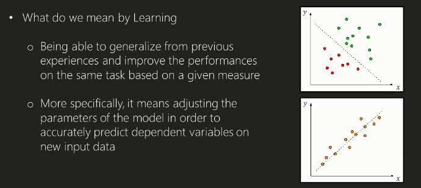
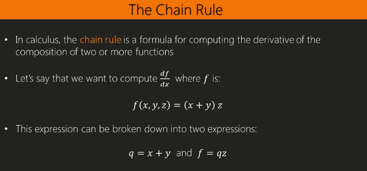

Advanced NN
Jose Parreno Garcia
March 2018
library(knitr)In this blog we are going to talk about
- The learning process
- Optimization algorithms and stochastic gradient descent
- Backpropagation
- Hyper-parameters optimization
1 The learning process
1.1 Learning as an optimization process

1.2 The score and the loss function
1.3 Designing the loss function
1.4 Adding the regulizarion term
2 Optimization algorithms and stochastic gradient descent
2.1 Introduction to optimization algorithm

2.2 Random search
2.3 Local search
2.4 Gradient descent and stochastic gradient descent (SGD)
3 Backpropagation
3.1 The chain rule

3.2 Example: learning weights of the perceptron
3.3 Automatic differentiation
4 Hyper-parameters optimization
4.1 Manual vs automatic hyper-parameters selection

4.2 Random search and grid search
In the following image you can see 2 different possible distribution for hyper parameter searching. The grid layout is quite a rigid method if you can’t look through ALL possible values. As you can see, in this example, grid search would miss on the best value (green hill) as the grey dots fall just at either side of it. With random search, you have a better chance (although not guaranteed), that parameters chosen will cover a wider spectrum of the values.
4.3 Hyper-parameters in R with h2o
library(mlbench)
library(h2o)
h2o.init(nthreads = -1)## Connection successful!
##
## R is connected to the H2O cluster:
## H2O cluster uptime: 18 minutes 25 seconds
## H2O cluster version: 3.16.0.2
## H2O cluster version age: 3 months and 10 days
## H2O cluster name: H2O_started_from_R_garciaj_tcn130
## H2O cluster total nodes: 1
## H2O cluster total memory: 0.77 GB
## H2O cluster total cores: 4
## H2O cluster allowed cores: 4
## H2O cluster healthy: TRUE
## H2O Connection ip: localhost
## H2O Connection port: 54321
## H2O Connection proxy: NA
## H2O Internal Security: FALSE
## H2O API Extensions: Algos, AutoML, Core V3, Core V4
## R Version: R version 3.4.0 (2017-04-21)data(BreastCancer)
data = BreastCancer
data[, c(1:ncol(data))] <- sapply(data[, c(1:ncol(data))], as.numeric)
data[, 'Class'] <- as.factor(data[, 'Class'])
train_h2o <- as.h2o(data[1:300,])##
|
| | 0%
|
|================================================================================================================================================================================================================================================| 100%val_h2o <- as.h2o(data[301:500,])##
|
| | 0%
|
|================================================================================================================================================================================================================================================| 100%test_h2o <- as.h2o(data[501:699,])##
|
| | 0%
|
|================================================================================================================================================================================================================================================| 100%head(train_h2o)## Id Cl.thickness Cell.size Cell.shape Marg.adhesion Epith.c.size Bare.nuclei Bl.cromatin Normal.nucleoli Mitoses Class
## 1 1000025 5 1 1 1 2 1 3 1 1 1
## 2 1002945 5 4 4 5 7 10 3 2 1 1
## 3 1015425 3 1 1 1 2 2 3 1 1 1
## 4 1016277 6 8 8 1 3 4 3 7 1 1
## 5 1017023 4 1 1 3 2 1 3 1 1 1
## 6 1017122 8 10 10 8 7 10 9 7 1 2Now we can choose the best hyper-parameters using the random search:
hyper_params <- list(
activation = c("Rectifier","Tanh","Maxout",
"RectifierWithDropout","TanhWithDropout",
"MaxoutWithDropout"),
hidden = list(c(20,20),c(50,50),c(30,30,30),c(25,25,25,25)),
input_dropout_ratio = c(0,0.05),
l1 = seq(0,1e-4,1e-6),
l2 = seq(0,1e-4,1e-6)
)
## Stop once the top 5 models are within 1% of each other (i.e., the windowed average varies less than 1%)
search_criteria = list(
strategy = "RandomDiscrete", max_runtime_secs = 360,
max_models = 100, seed=1234567, stopping_rounds=5,
stopping_tolerance=1e-2
)
dl_random_grid <- h2o.grid(
algorithm="deeplearning",
grid_id = "dl_grid_random_1",
training_frame=train_h2o,
validation_frame=val_h2o,
x=2:10,
y=11,
epochs=1,
## stop when logloss does not improve by >=1% for 2 scoring events
stopping_metric="logloss",
stopping_tolerance=1e-2,
stopping_rounds=2,
hyper_params = hyper_params,
search_criteria = search_criteria
) ##
|
| | 0%
|
|= | 0%
|
|=========================================== | 18%
|
|=================================================================================== | 35%
|
|==================================================================================================================== | 48%
|
|============================================================================================================================================================= | 66%
|
|========================================================================================================================================================================================= | 77%
|
|================================================================================================================================================================================================================ | 87%
|
|========================================================================================================================================================================================================================================== | 97%
|
|================================================================================================================================================================================================================================================| 100%grid <- h2o.getGrid("dl_grid_random_1",sort_by="logloss",
decreasing=FALSE)
grid@summary_table## Hyper-Parameter Search Summary: ordered by increasing logloss
## activation hidden input_dropout_ratio l1 l2 model_ids logloss
## 1 Tanh [25, 25, 25, 25] 0.0 2.9E-5 8.8E-5 dl_grid_random_1_model_7 0.0841935192211505
## 2 Tanh [30, 30, 30] 0.0 9.8E-5 2.1E-5 dl_grid_random_1_model_80 0.08431354797573823
## 3 Rectifier [30, 30, 30] 0.05 7.0E-5 8.2E-5 dl_grid_random_1_model_1 0.08685435725751754
## 4 Tanh [50, 50] 0.05 6.6E-5 1.0E-5 dl_grid_random_1_model_27 0.08835133094138017
## 5 TanhWithDropout [20, 20] 0.0 3.2E-5 1.8E-5 dl_grid_random_1_model_18 0.09450682039717531
##
## ---
## activation hidden input_dropout_ratio l1 l2 model_ids logloss
## 95 MaxoutWithDropout [25, 25, 25, 25] 0.05 5.0E-5 1.5E-5 dl_grid_random_1_model_59 0.5208665732250989
## 96 MaxoutWithDropout [25, 25, 25, 25] 0.05 5.9E-5 3.2E-5 dl_grid_random_1_model_55 0.570838379200818
## 97 MaxoutWithDropout [25, 25, 25, 25] 0.0 2.2E-5 8.2E-5 dl_grid_random_1_model_73 0.5932801592085726
## 98 RectifierWithDropout [30, 30, 30] 0.05 5.0E-6 1.2E-5 dl_grid_random_1_model_2 0.6088138183385655
## 99 RectifierWithDropout [25, 25, 25, 25] 0.0 1.4E-5 6.2E-5 dl_grid_random_1_model_46 0.6229406170502836
## 100 MaxoutWithDropout [25, 25, 25, 25] 0.0 6.7E-5 1.5E-5 dl_grid_random_1_model_87 0.7465185899480217## model with lowest logloss
best_model <- h2o.getModel(grid@model_ids[[1]])
best_model## Model Details:
## ==============
##
## H2OBinomialModel: deeplearning
## Model ID: dl_grid_random_1_model_7
## Status of Neuron Layers: predicting Class, 2-class classification, bernoulli distribution, CrossEntropy loss, 2,252 weights/biases, 33.5 KB, 318 training samples, mini-batch size 1
## layer units type dropout l1 l2 mean_rate rate_rms momentum mean_weight weight_rms mean_bias bias_rms
## 1 1 9 Input 0.00 %
## 2 2 25 Tanh 0.00 % 0.000029 0.000088 0.010852 0.008996 0.000000 0.025274 0.241313 0.000061 0.003570
## 3 3 25 Tanh 0.00 % 0.000029 0.000088 0.019822 0.017134 0.000000 0.005957 0.204827 0.000874 0.006012
## 4 4 25 Tanh 0.00 % 0.000029 0.000088 0.021455 0.028539 0.000000 -0.006568 0.203931 -0.000347 0.003229
## 5 5 25 Tanh 0.00 % 0.000029 0.000088 0.031572 0.097914 0.000000 -0.005553 0.199576 0.000644 0.001890
## 6 6 2 Softmax 0.000029 0.000088 0.012897 0.007825 0.000000 -0.310092 0.976876 -0.000295 0.003346
##
##
## H2OBinomialMetrics: deeplearning
## ** Reported on training data. **
## ** Metrics reported on full training frame **
##
## MSE: 0.04691289
## RMSE: 0.2165938
## LogLoss: 0.1610629
## Mean Per-Class Error: 0.0410416
## AUC: 0.9853567
## Gini: 0.9707134
##
## Confusion Matrix (vertical: actual; across: predicted) for F1-optimal threshold:
## 1 2 Error Rate
## 1 152 11 0.067485 =11/163
## 2 2 135 0.014599 =2/137
## Totals 154 146 0.043333 =13/300
##
## Maximum Metrics: Maximum metrics at their respective thresholds
## metric threshold value idx
## 1 max f1 0.211963 0.954064 142
## 2 max f2 0.076198 0.973011 152
## 3 max f0point5 0.571401 0.943838 122
## 4 max accuracy 0.211963 0.956667 142
## 5 max precision 0.997472 1.000000 0
## 6 max recall 0.076198 1.000000 152
## 7 max specificity 0.997472 1.000000 0
## 8 max absolute_mcc 0.211963 0.914788 142
## 9 max min_per_class_accuracy 0.323440 0.944785 135
## 10 max mean_per_class_accuracy 0.211963 0.958958 142
##
## Gains/Lift Table: Extract with `h2o.gainsLift(<model>, <data>)` or `h2o.gainsLift(<model>, valid=<T/F>, xval=<T/F>)`
## H2OBinomialMetrics: deeplearning
## ** Reported on validation data. **
## ** Metrics reported on full validation frame **
##
## MSE: 0.02249092
## RMSE: 0.1499697
## LogLoss: 0.08419352
## Mean Per-Class Error: 0.01428571
## AUC: 0.9964286
## Gini: 0.9928571
##
## Confusion Matrix (vertical: actual; across: predicted) for F1-optimal threshold:
## 1 2 Error Rate
## 1 136 4 0.028571 =4/140
## 2 0 60 0.000000 =0/60
## Totals 136 64 0.020000 =4/200
##
## Maximum Metrics: Maximum metrics at their respective thresholds
## metric threshold value idx
## 1 max f1 0.235766 0.967742 63
## 2 max f2 0.235766 0.986842 63
## 3 max f0point5 0.716381 0.968310 55
## 4 max accuracy 0.235766 0.980000 63
## 5 max precision 0.996018 1.000000 0
## 6 max recall 0.235766 1.000000 63
## 7 max specificity 0.996018 1.000000 0
## 8 max absolute_mcc 0.235766 0.954314 63
## 9 max min_per_class_accuracy 0.306766 0.971429 62
## 10 max mean_per_class_accuracy 0.235766 0.985714 63
##
## Gains/Lift Table: Extract with `h2o.gainsLift(<model>, <data>)` or `h2o.gainsLift(<model>, valid=<T/F>, xval=<T/F>)`